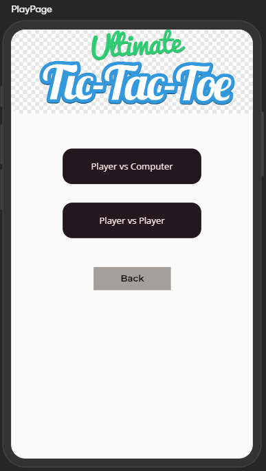

4. Application pages
4.1 Home Page
The Home Page is the page where user have different buttons linked to different pages. He can login/register and then start his experience.
4.2 Login Page
With this page the user can log in the application using the email and the password of the account. More options for logging are in progress.
4.3 Register Page
In case of a new user, or a user that wants a new account this is the page needed. Anyone in this situation should complete a formular with next information: email, password, username and profile images. This informations can be modified later on.
4.4 Profile Page
This page contains account informations about the current logged user. Here, the user can press 'Update profile' in order to complete a formular with the informations he need to change. Furthermore, here, the user can logout from app and see his status regading the winns and the win rate so far.

4.5 Update Profile Page
In order to access this page, you have to be logged in and to enter the current password. As explained before, here, the user complete the form in order to update his account informations.
Pop-up used for user when deleting or updating profile.
4.6 Rankings Page
On this page, users can see top 10 players from the last week and top players so far by win rate. The page also contains a search filter for every player that wants to know his ranking.
4.7 About Page
Here you can find informations about the game, how to play, how it was implemented, who implemented, contact informations and a video where you can see how to play the game.
4.8 Main Game Page
When pressing 'Play' button from 'Home Page', the user have to choose which mode, against computer or against other players (including friends - by code).
4.9 Game Page
This is the actual Game, here the player have the pieces and the table on the screen and play the game.
Player vs Player
Player vs Player - EMOTES

Player vs Computer